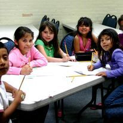

Giselle Coleote
My name is Giselle Coleote, I am currently a first year in the University of California Riverside. I am an undergraduate in Business Administration. I have volunteered in a non profit organization named ACAM, helping children learn music, and providing them with help on homework. I have also volunteered at Toberman Recreation Center, a park dedicated to help/ take care of low income children. During holidays, the children are provided with support and help to their families. I have currently also volunteered in my local church, by raising money for the church. I have served my community by also participating in the South Central Youth Leadership Coalition, by advocating for pollution within our area and the effects it has had in our communities health. I have been to many conferences around the US to understand the global impact of pollution, especially near low income areas. We seem to be the main target, health wise. Besides, serving my community I have also been a part of Leadership, which has helped me with leadership skills. I am currently in a First Generation Club, where we learn about many tips, and resources to help students like me. As for extracurriculars I run the LA Marathon every year, which has taught me a lot about motivation.
I have worked in a family business, renting movies, and selling clothes. I have worked at a local market store near my house for a year. Although, my work experience hasn’t been the highest, I have been unable to work at other places due to my citizenship status until currently. I plan to obtain a job soon, and learn more about working
The activities I have been a part of have taught me how to be respectful, and a great communicator. I am a bilingual speaker which means I speak, English, and can translate it to Spanish. Some qualities that I also carry are being patient, working with children for over 3 years, has taught me how to understand people, and accept everyone’s different opinions. It is difficult but it is necessary in order to work with people. I am also a great listener, I tend to stay focused when someone is speaking, and I see their point of view. I am also very outgoing, I enjoy speaking to people, and getting to know them. Besides this I am very considerate, and generous. Whenever someone needs help. I tend to give help with whatever I have or can. Due to me experience in sports, I have managed to learn how to use my time correctly and and not procrastinate. I have connected running marathons with staying motivated despite any circumstance. I work great with people, and I know how to also motivate others, I always provide people with advice. I am very accepting of every persons decisions and beliefs, and I am always open to learn about other people’s ideas, cultures, and beliefs. Connecting with people allows me to grow as a person and have diversity around me, as it is very important.
Experience
Education
UC Riverside
Portfolio
